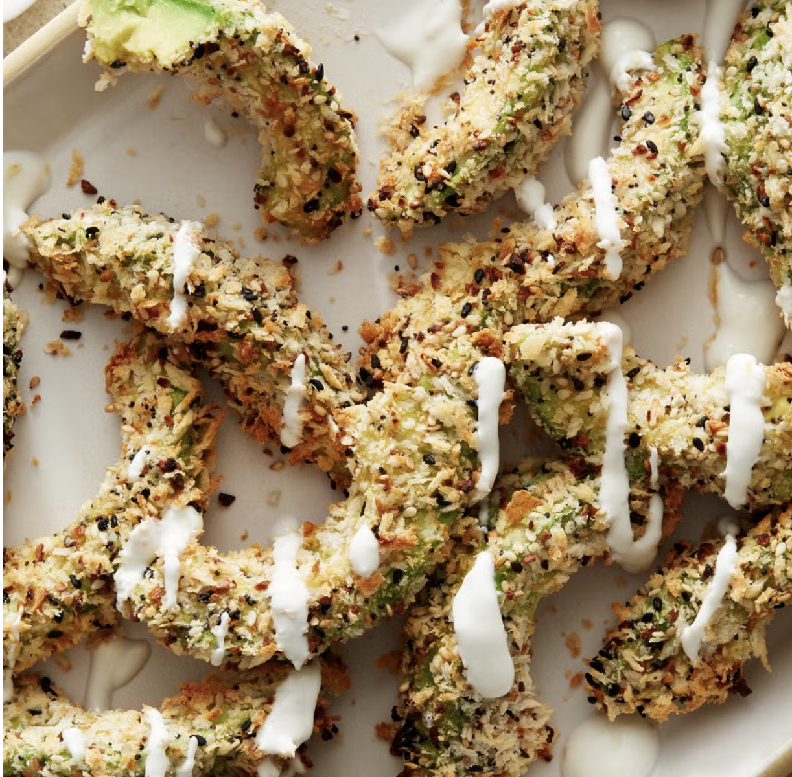
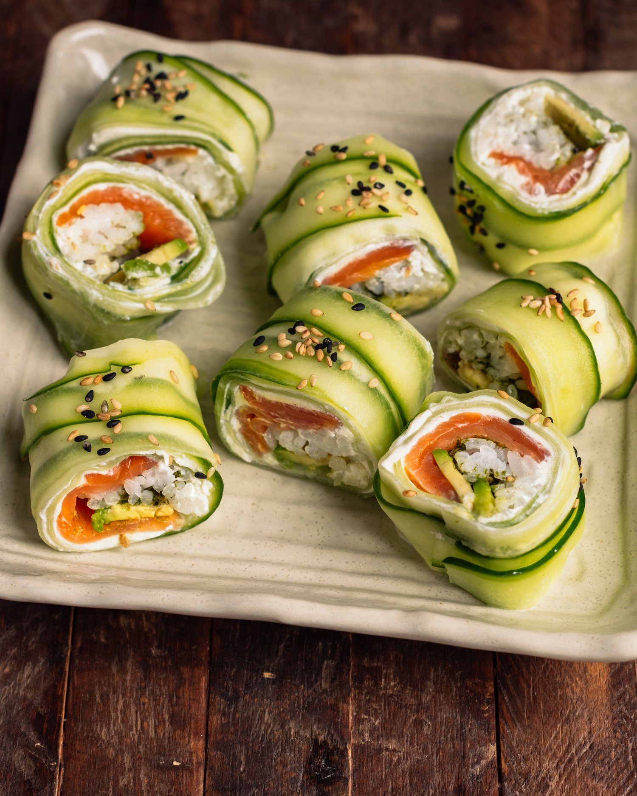

Baked Beans with Poached Eggs
Ingredients
- 2 tsp rapeseed oil
- 1 small red onion, finely chopped
- 1 carrot (about 85g/3oz total/unprepared weight), peeled and finely diced
- 1 stick celery, finely diced
- 1 tbsp red wine vinegar
- 227g (8oz) can chopped tomatoes in rich natural juice
- 1½ tsp light brown soft sugar
- 1 tsp paprika
- ½ tsp Worcestershire sauce, or vegetarian alternative
- Freshly ground black pepper, to taste
- ½ x 400g (14oz) can haricot beans in water, drained and rinsed (about 115g/4oz drained weight)
- About 4 tbsp hot home-made or reduced-salt vegetable stock (optional)
- 2 large eggs
How to Make
- Heat rapeseed oil in a non-stick saucepan. Add chopped onion, carrot, and celery, and sauté over medium heat for about 10 minutes until they soften. Carefully stir in the vinegar and cook for 1 minute. Then, add tomatoes, sugar, paprika, Worcestershire sauce, and black pepper. Bring the mixture to a simmer, cover, and cook gently for 10 minutes, stirring occasionally.
- Add the beans to the sauce; if it appears too thick, incorporate some stock. Return to a simmer, cover, and cook gently for an additional 8–10 minutes, until the sauce is fully cooked and the beans are heated through.
- In the meantime, poach eggs in a separate pan of gently simmering water (or use an egg poacher) for a few minutes, or until they reach your preferred doneness. Remove them from the water with a slotted spoon or turn them out of the poaching cups to serve.
- Serve the baked beans topped with poached eggs or on the side, accompanied by fresh crusty bread or toast.

Air Fryer Everything Bagel Avocado Fries
Ingredients
- 1/4 c. all-purpose flour
- 2 large eggs
- 3/4 c. panko breadcrumbs
- 3 Tbsp. everything bagel seasoning
- 2 Tbsp. black and/or white sesame seeds
- 2 large, just ripe avocados, halved, pitted, peeled, and sliced ½" thick
- Olive oil cooking spray
- 2 oz. cream cheese
- 1 Tbsp. (or more) water
- lime wedges, for serving
How to Make
- Place flour in a shallow bowl. In another shallow bowl, beat the eggs until well combined. In a third shallow bowl, mix together panko, everything bagel seasoning, and sesame seeds. Dip the avocado strips in the flour, shaking off any excess, then dip them in the eggs, and finally coat them with the panko mixture, gently pressing to ensure it sticks. Transfer the coated strips to a plate.
- Lightly spray the air-fryer basket with cooking spray. Working in batches, arrange the avocado strips in a single layer in the basket, leaving about 1/4 inch between them, and spray with more cooking spray. Cook at 350°F, flipping them halfway through and spraying again, until they are golden and crispy, about 6 to 8 minutes. Clean out any leftover breading from the basket between batches.
- In a small heatproof bowl, microwave the cream cheese on high until melted and smooth, approximately 30 seconds. Stir in water, adding more if needed to achieve a drizzleable consistency.
- Drizzle the melted cream cheese over the avocado fries and serve with lime wedges on the side.

Pea and Spinach Carbonara
Ingredients
- 1 ½ tablespoons extra-virgin olive oil
- ½ cup panko breadcrumbs, preferably whole-wheat
- 1 small clove garlic, minced
- 8 tablespoons grated Parmesan cheese, divided
- 3 tablespoons finely chopped fresh parsley
- 3 large egg yolks
- 1 large egg
- ½ teaspoon ground pepper
- ¼ teaspoon salt
- 1 (9 ounce) package fresh tagliatelle or linguine
- 8 cups baby spinach
- 1 cup peas (fresh or frozen)
How to Make
- Fill a large pot with 10 cups of water and bring it to a boil over high heat.
- In a separate large skillet, heat oil over medium-high heat. Add breadcrumbs and garlic, cooking while stirring frequently until golden brown, about 2 minutes. Transfer to a small bowl and mix in 2 tablespoons of Parmesan and parsley. Set aside.
- In a medium bowl, whisk together the remaining 6 tablespoons of Parmesan, egg yolks, whole egg, pepper, and salt.
- Cook the pasta in the boiling water, stirring occasionally, for 1 minute. Add the spinach and peas, cooking until the pasta is tender, about another minute. Reserve 1/4 cup of the cooking water, then drain the pasta and place it in a large bowl.
- Gradually whisk the reserved cooking water into the egg mixture. Slowly add this mixture to the pasta, tossing with tongs to combine. Serve with the breadcrumb mixture on top.

Cucumber Sushi
Ingredients
- SUSHI
- 2 medium English cucumbers, halved
- 1/4 avocado, thinly sliced
- 1/2 red bell pepper, seeds and ribs removed, thinly sliced
- 1/2 yellow bell pepper, seeds and ribs removed, thinly sliced
- 2 small carrots, thinly sliced
- SAUCE
- 1/3 c. mayonnaise
- 1 Tbsp. Sriracha
- 1 tsp. soy sauce
How to Make
- Use a small spoon to scoop out the seeds from the center of the cucumbers, making them hollow.
- Press avocado into the center of each cucumber. With a butter knife, pack in bell peppers and carrots until the cucumber is full.
- Step 1: In a small bowl, whisk together mayonnaise, sriracha, and soy sauce until well mixed.
- Cut the cucumber into 1-inch thick rounds and arrange them on a platter. Serve with the dipping sauce on the side.

Herby Cheese and Tomato Omelette
Ingredients
- 2 tomatoes, sliced
- Small handful of fresh parsley, finely chopped
- 1 teaspoon extra-virgin olive oil
- 2 large eggs
- 1 teaspoon finely grated parmesan
- 1 spring onion, finely sliced
- cooking spray oil
How to Make
- In a small bowl, combine the tomatoes with most of the parsley and olive oil, then set aside.
- In another small bowl, mix the eggs, Parmesan, and spring onion using a fork. Season generously with ground black pepper.
- Lightly spray a non-stick frying pan with oil and heat it over medium heat. Once hot, pour in the egg mixture and swirl it to cover the bottom of the pan. As the edges begin to set, gently pull them toward the center with a wooden spoon, allowing the uncooked egg to flow into the gaps. Continue this until the eggs are nearly cooked and the bottom is golden, then carefully flip and cook for about 1 minute on the other side.
- Once the omelette is cooked but still slightly soft in the center, slide it onto a plate. Place the tomatoes on one half of the omelette and then fold the other half over. Serve garnished with black pepper and the remaining parsley.

Fried Cauliflower
Ingredients
- cauliflower
- all-purpose flour
- cornstarch
- baking powder
- salt
- hot sauce
- breadcrumbs
- oil
How to Make
- In a large bowl, whisk together the all-purpose flour, cornstarch, baking powder, and a pinch of salt. Then, add the water and hot sauce, mixing until smooth.
- Dip each piece into the batter, ensuring they are well coated but not dripping. After that, roll each piece in the Italian seasoned breadcrumbs for an even coating.
- Heat the oil in the deep fryer to 365°F (185°C). Fry the cauliflower in batches to prevent overcrowding and sticking. Aim for a nice golden brown color.
- Once fried perfectly, place them on paper towels to absorb any excess oil. For an extra touch, sprinkle some salt over them for added flavor.

Egg and Tomato Wrap
Ingredients
- 2 wholemeal or multi-seed tortillas (deli) wraps (each about 25cm/10in in diameter)
- 4 tbsp reduced fat soft cheese
- 1-2 tbsp snipped fresh chives or parsley (optional)
- 2 large eggs, hard-boiled, drained and cooled
- 25g (1oz) rocket leaves
- 2 tomatoes, sliced
- Freshly ground black pepper, to taste
How to Make
- Spread soft cheese on one side of each tortilla wrap and sprinkle with snipped chives or parsley, if desired.
- Peel the eggs and slice them. Place the egg slices and rocket leaves in the center of each wrap.
- Add tomato slices on top and season with black pepper.
- Fold or roll the tortilla wraps to enclose the filling, then cut each wrap into 3 or 4 pieces. Serve right away.

Honey Lime Fruit Salad
Ingredients
- ½ lb fresh strawberry(225 g), quartered
- 2 kiwis, peeled and diced
- 2 mangoes, diced
- 2 bananas, sliced
- ½ lb fresh blueberry(225 g)
- 2 tablespoons honeyd
- 1 lime, juice
How to Make
- Put the sliced fruits in a large bowl.
- In a small bowl, combine honey and lime juice. Drizzle the mixture over the fruit and toss to combine
- Enjoy!

Green Eggs and Ham
Ingredients
- 4 eggs
- ¼ cup skim milk
- 3 teaspoons basil pesto
- 4oz lean shaved ham
- 2 slices wholegrain bread, toasted, cut in soldiers
How to Make
- In a large microwave-safe bowl, use a fork to whisk together the eggs, milk, and pesto until thoroughly mixed. Microwave on high for 30 seconds. Take out the bowl and stir. Return it to the microwave for another 30 seconds, then stir again. Repeat this process 1 or 2 more times until the eggs are soft and moist.
- Serve the scrambled eggs on two plates, accompanied by slices of ham and toast soldiers.